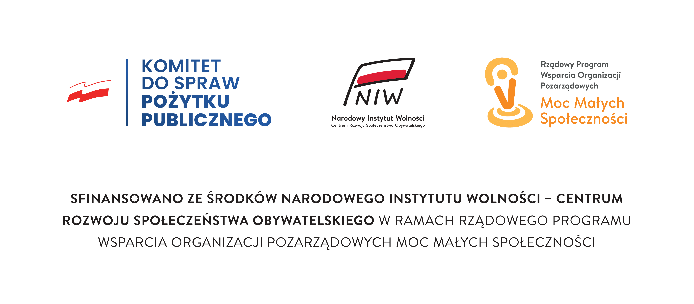

Stowarzyszenie Producentów Fasoli Tycznej
Piękny Jaś we Wrzawach
Projekt "Wrzawska partycypacja"
Dofinansowanie z Narodowego Instytutu Wolności - Centrum Rozwoju Społeczeństwa Obywatelskiego
Rządowy Program Wsparcia Organizacji Pozarządowych
Moc Małych Społeczności
Główny cel projektu
Zwiększenie potencjału lokalnej organizacji pozarządowej, działającej na terenie wiejskim, do prowadzenia działań na rzecz rozwoju aktywności i integracji społecznej oraz zwiększenia odporności społeczności lokalnych na kryzysy.
Cele szczegółowe
- zwiększenie zdolności organizacji do angażowania mieszkańców w działania na rzecz dobra wspólnego
- wzrost aktywności społecznej wśród lokalnej społeczności
- zwiększenie specjalistycznej wiedzy uczestników szkoleń, w tym w zakresie zagrożeń i klęsk żywiołowych oraz możliwości przeciwdziałania ich skutkom
Planowane działania
- przeprowadzenie 1 szkolenia z partycypacji społecznej i wolontariatu dla 25 osób
- przeprowadzenie 3 szkoleń specjalistycznych dla 25 osób każde
- zakup i montaż bezprzewodowej stacji pogodowej z oprogramowaniem i szkoleniem z zakresu obsługi
- zakup specjalistycznych urządzeń do pomiaru wilgotności oraz pH gleby
Realizacja zadania
Działanie 1: Rozwój Instytucjonalny
W ramach pierwszego działania zakupione zostały specjalistyczne urządzenia diagnostyczno-pomiarowe (łącznie 5 sztuk):
- stacja meteorologiczna Davis Vantage Pro2 z oprogramowaniem i odpowiednim osprzętem (m.in. maszt, monitor, pakiet danych) oraz szkoleniem z zakresu obsługi stacji (1 kpl.)
- czujniki do pomiaru pH gleby (2 szt.)
- urządzenie do pomiaru temperatury i wilgotności (2 szt.)
Lokalizacja stacji pogodowej: Stacja została zainstalowana na terenie gminy, przy drodze wojewódzkiej obok placu zabaw (działka 1997/54).
Wyposażenie zakupione w ramach projektu pozwala obecnie precyzyjnie określać warunki pogodowe, dostosować odpowiednie środki dla upraw oraz zapobiegać ewentualnym zniszczeniom upraw oraz przeciwdziałać zagrożeniom powodziowym. Z urządzeń korzystają nie tylko członkowie Wnioskodawcy, ale wszyscy zainteresowani (rolnicy, sadownicy, plantatorzy).
Urządzenia poprawią sytuację rolników-plantatorów, ponieważ umożliwią lepszą ocenę stanu gleby, spodziewane wahania temperatury, będą pomocne w określaniu i definiowaniu skutków klęsk żywiołowych (susza, powódź, przymrozki, podmoknięcia po nawalnych deszczach), co z kolei pozwoli rolnikom na określenie zakresu szkód i udowodnieniem ich przed organami państwowymi i firmami ubezpieczeniowymi.
Więcej informacji na Facebook:
Działanie 2: Szkolenia
Zostały zorganizowane i przeprowadzone 4 szkolenia dla 25 osób każde:
Szkolenie z partycypacji społecznej i wolontariatu
Data: 23 listopada 2025 r.
Miejsce: Wrzawy, sala Domu Kultury
Prowadzący: Robert Gawlik - ekspert od lat zajmujący się tematyką ngo
Podczas 3-godzinnego szkolenia prowadzący wyjaśnił uczestnikom, czym jest partycypacja społeczna, omówił możliwości w zakresie partycypacji, potrzeby zainicjowania dialogu społecznego na temat potrzeb lokalnej społeczności, kierunków możliwej współpracy, w szczególności z lokalnym samorządem, konsultacji społecznych jako aktywnej formie uczestnictwa w procesie stanowienia prawa.
Szkolenie specjalistyczne: "Zagrożenia powodziowe oraz sposoby przeciwdziałania"
Data: 19 listopada 2025 r.
Miejsce: Wrzawy, sala Domu Kultury
Prowadząca: Małgorzata Wódz - Akademia Szkoleń Małgorzata Wódz
Zebranym zaprezentowana została prezentacja multimedialna, jak zapobiec zagrożeniom powodziowym, ewentualnym zniszczeniom upraw, usuwaniem skutków podmoknięć po nawalnych deszczach, które to stanowi realne zagrożenie dla lokalnej społeczności z uwagi na położenie terenu w dorzeczu Wisły i Sanu.
Szkolenie specjalistyczne: "Wykorzystanie lokalnych zbiorników wodnych"
Data: 26 listopada 2025 r.
Miejsce: Wrzawy, sala Domu Kultury
Prowadząca: Małgorzata Wódz
Temat: wykorzystanie lokalnych zbiorników wodnych (naturalnych i sztucznych) jako potencjalnych zasobów w obliczu zagrożenia pożarowego (stawy i oczka wodne). Wskazano obecnym na konieczność gromadzenia wody w formie nawet małych, przydomowych stawków i oczek wodnych, ważnych w obliczu pożaru i możliwości wykorzystania wody retencyjnej do gaszenia pożarów.
Szkolenie specjalistyczne: "Uprawy, nawożenie"
Data: 27 listopada 2025 r.
Miejsce: Wrzawy, sala Domu Kultury
Prowadzący: Ekspert z Podkarpackiego Ośrodka Doradztwa Rolniczego z Boguchwały
Omówione zostały następujące tematy: jak uniknąć przenawożenia i braku odpowiednich składników, wykorzystanie poplonów w poprawie jakości gleby, rodzaje nawozów wykorzystywanych w popularnych uprawach w regionie (fasola, kukurydza, pszenica, ziemniaki). Ponadto podane zostały wymagane terminy badania gleby, nawożenia i dożywiania upraw nawozami dolistnymi.
Relacja ze szkoleń na Facebook:
Działanie 3: Koordynacja projektu
Koordynacja zadania została powierzona podmiotowi zewnętrznemu z dużym doświadczeniem z zakresu realizacji zadań ze środków zewnętrznych (krajowych i unijnych). Na podstawie umowy z dnia 29.08.2025 r. obowiązki koordynatora projektu pełniło Stowarzyszenie na Rzecz Rozwoju i Promocji Podkarpacia "Pro Carpathia" z siedzibą w Rzeszowie.
Podsumowanie i osiągnięte rezultaty
Osiągnięty został główny cel zadania, jakim było zwiększenie potencjału lokalnej organizacji pozarządowej, działającej na terenie wiejskim, do prowadzenia działań na rzecz rozwoju aktywności i integracji społecznej oraz zwiększenia odporności społeczności lokalnych na kryzysy.
Realizacja projektu podniosła wiedzę oraz potencjał Wnioskodawcy, który nabył doświadczenie w realizacji zadań publicznych. Zakup urządzeń specjalistycznych, będących do tej pory poza możliwościami finansowymi Wnioskodawcy, znacząco doposażył organizację, pozytywnie wpłynął na poprawę jej wizerunku, z olbrzymią korzyścią dla lokalnej, wiejskiej społeczności.
Nastąpiło również zwiększenie specjalistycznej wiedzy uczestników szkoleń, w tym w zakresie upraw, nawożeń, zagrożeń i klęsk żywiołowych oraz możliwości przeciwdziałania ich skutkom, a także potrzeby partycypacji społecznej oraz działań wolontariackich.